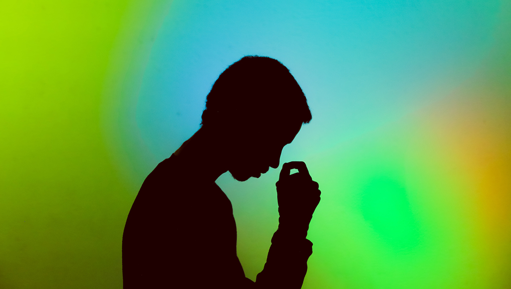

Bottom Right
-Stresssituation entziehen
-positive Selbstgespräche führen->positive Gedanken tragen zur Entspannung des Körpers bei und lassen jegliche Arten von Anspannung verklingen
-Sport treiben->Sport regt das Herz-Kreislauf-System an und regt somit zur besseren Sauerstoffversorgung des Gehirn bei
-Musik hören-> Musik hören versetzt den Körper in einen ähnlichen Zustand wie unter Marihuana-Einfluss, sodass man sich nicht mehr auf die Stresssoren konzentriert und somit weder ACTH noch Adrenalin weiter ausgeschüttet werden
-Etwas ballasstoffhaltiges essen-> durch die Ausschüttung von Adrenalin wird der Magen-Darm Trakt gehemmt. So sollte man ihn mit Ballaststoffen und Flüssigkeit wieder in Fahrt bringen
-warm duschen->Durch die warme Temperatur und die Konsistenz des Wassers entspannt sich der Körper, sodass sich der Puls senkt und der Blutdruck zurückgeht.
-Selbstmassage in Nacken-,Schulter und Kopfgegend. Durch die Stimulierung von bestimmten Muskeln entspannt sich der Körper grundlegend, sodass der Puls gesnkt wird.
=> Generell kann der Körper durch diese Anleitung besser und schneller Adrenalin abbauen, sodass die Symptome zurückgehen und man sich entspannt
Stress? Keine Sorge wir helfen.
Wie behandelt man Adrenalin?(Stresstyp 1)
Hier ein paar Vorschläge: